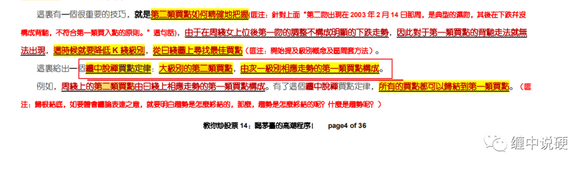
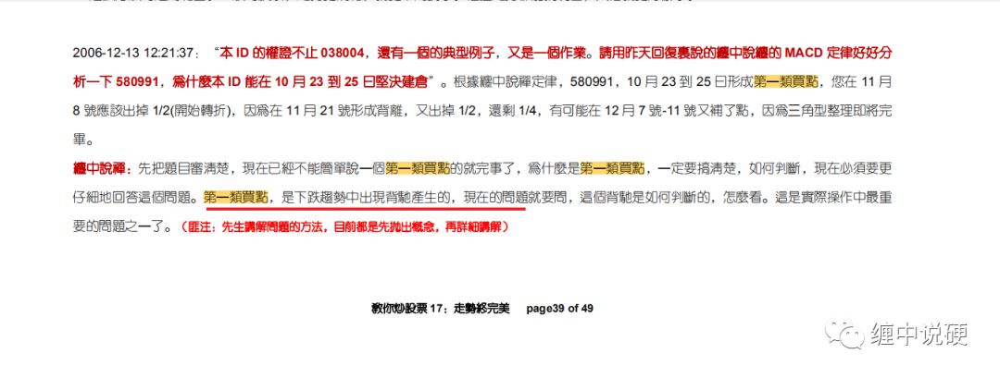
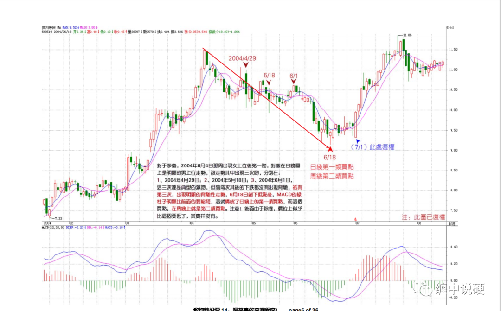
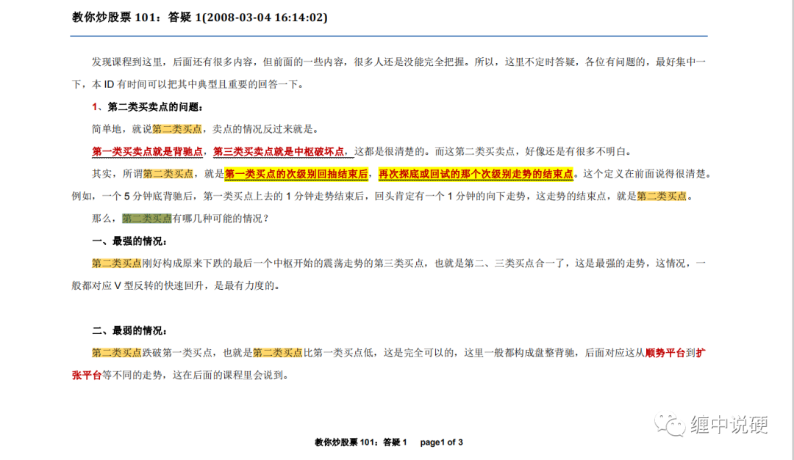
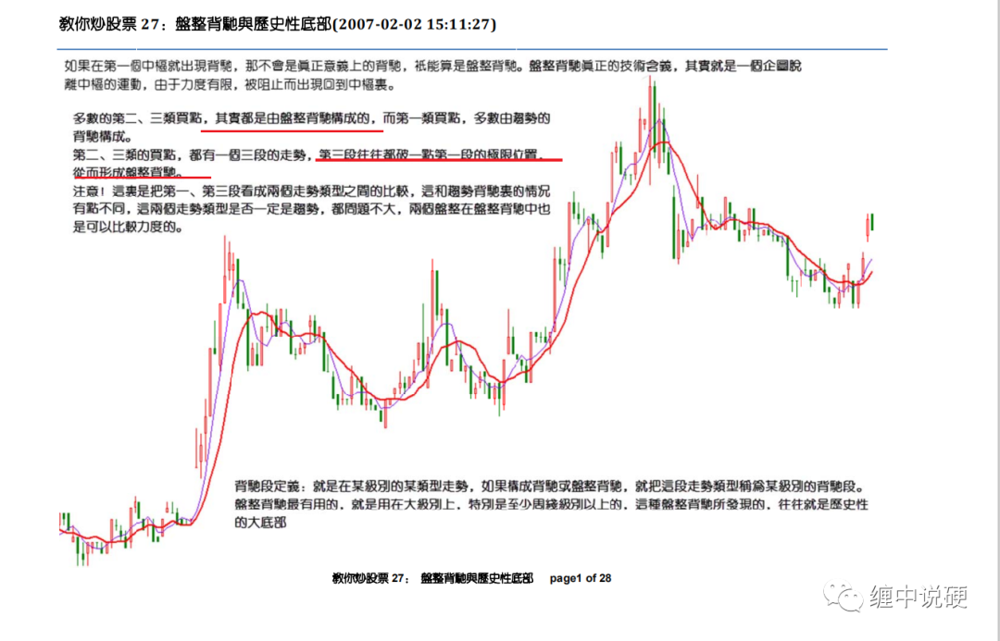

缠论第二类买卖点的探究

上图为14课的原文：
缠中说禅买点定律：大级别的第二类买点，是次一级别相应走势的第一类买点构成。
有相当长一段时间，我一直以为第二类买点是次级别第一类买点，那么一定是次级别的趋势背驰。

上图为原文17课的课后解答：
缠本人说的很清楚，第一类买点，是下跌趋势中出现背驰产生的。也就是说趋势背驰一定是第一类买点。
这一课内容让我更加相信，第二类买点一定是次级别的趋势背驰，但实际分析过程中，一直找不到第二类买点，所以非常困惑。

上图为原文示意图：
箭头所示为标准的盘整背驰，原文中定义为第二类买点。上图箭头显然不是一个趋势，不是趋势肯定就不是趋势背驰，不是趋势背驰怎么可能是第二类买点？
这里有一个困惑，是否盘整背驰也可以称为第一类买卖点？

在101课答疑中，有明确：所谓第二类买点，就是第一类买点的次级别回抽结束后，再次探底或回试的那个次级别走势的结束点。
这里的关键点是：走势的结束点。 走势的结束并不必然是趋势。

回到27课原文，原来缠说的第一类买点，只要是结束点，都可以认为是第一类买点。
趋势背驰一定是第一类买卖点，但第一类买卖点不一定是趋势背驰。